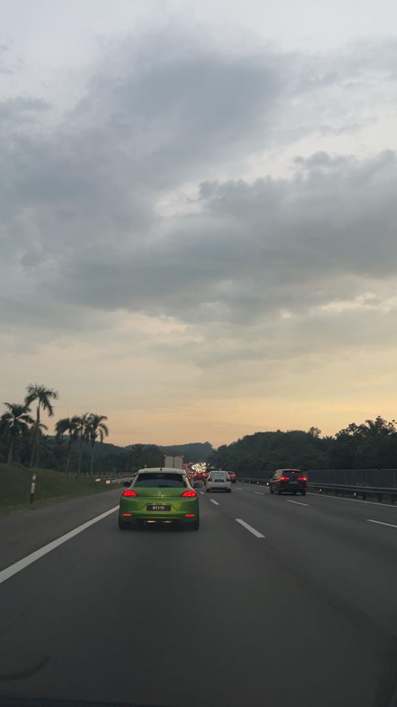
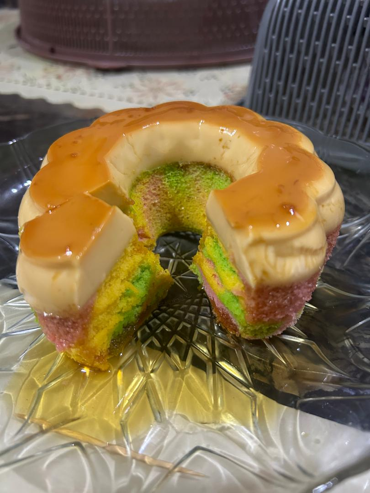

My Hobbies & Interests

Driving
Things I enjoy doing alone. Sometimes I rant to myself and reflect while driving.

Baking
Inspired by my mom's hobby. I enjoy experimenting and learning baking techniques with her guidance.

Part-Time Work
During long breaks, I work as live host, packing parcels, or at warehouse. Small steps are progress!

Shopping
I love buying shoes and local bags, and my latest addition is a cardholder.

Food Hunting
We chose to go to Shabuyaki after class as a self-reward for submitting our assignment.

Reading Threads
I spend time reading interesting threads & articles, often more than scrolling TikTok!
"Do something you love, and you’ll never work a day in your life."